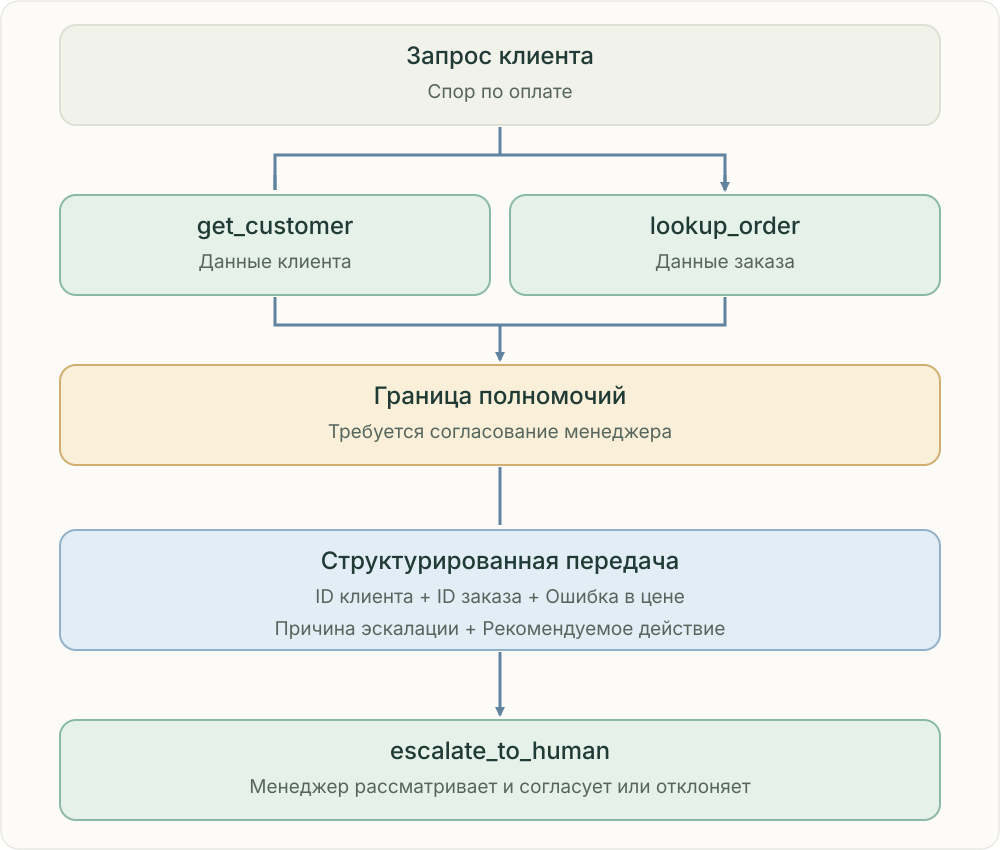

Учитывайте полномочия. Передавайте доказательства.
Агент может собирать факты, не имея права согласовывать любое действие. Если спор по оплате требует решения менеджера, остановите ограниченное действие и передайте человеку структурированные материалы.

Инструменты чтения собирают факты; ограниченное действие ожидает решения менеджера.
Знание не равно разрешению
get_customer и lookup_order получают нужные сведения в пределах разрешённого доступа. Обнаруженная ошибка в цене сама по себе не даёт агенту права вернуть деньги или изменить списание. Код приложения проверяет доступ и необходимые согласования до ограниченного действия.
Передавайте готовый к рассмотрению случай
Укажите ID клиента, ID заказа, найденную ошибку в цене, причину эскалации и рекомендуемое действие. Приложите доказательства и оставшиеся неопределённости; отделяйте подтверждённые факты от предполагаемых ошибок. Передавайте только необходимые для проверки сведения.
Эскалация не означает согласование
escalate_to_human направляет материалы человеку, но не утверждает рекомендацию. Менеджер может согласовать её, отклонить или запросить уточнения. Сохраняйте статус проверки и решение в устойчивом состоянии, чтобы продолжить процесс без повторных действий.
Не обходите границу полномочий
Не разбивайте ограниченное действие на мелкие для обхода лимита и не повторяйте его другим инструментом. Перед исполнением проверьте, что согласование относится к этому случаю и действию; исключите дубли при повторах.
Связанные темы
Проверьте себя
Какого входа не хватает? Кто отвечает за следующий шаг? Какие доказательства нужно сохранить? Объясните причину ошибки до выбора компонента.
Источники и границы
Anthropic · How we built our multi-agent research systemAnthropic · When to use multi-agent systems
Независимое учебное пособие · Проверено 25 октября 2026.